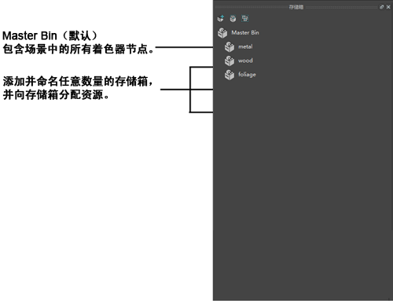

排序存储箱是着色节点（材质、纹理等）的容器，这些存储箱已添加到“Hypershade”以帮助您组织和平移场景中的着色节点。
默认的 Master Bin 包含场景中的所有着色节点。您可以将任意数量的其他存储箱添加到场景并将节点指定给其中一个或多个存储箱。通过有意义地命名存储箱（如木材、金属、门、树叶），您可以快速、轻松地找到要处理的着色资产。
注：
- 当将某个节点指定给某存储箱时，该节点的所有上游着色节点也将指定给该存储箱。
- 所有排序存储箱都有“Hypershade”资产选项卡（“材质”(Materials)、“纹理”(Textures)等），从而允许进一步组织和过滤。
- 虽然可以将着色节点指定给多个存储箱，但不会在场景中进行复制。
选择存储箱和查看存储箱的内容
- 当选择一个或多个存储箱时，您可以查看其内容。
- 若要选择并查看某存储箱的内容，请单击该箱。
- 若要选择多个存储箱，请执行下列操作之一：
- 按住 Shift 键并单击一系列存储箱。
- 按住 Ctrl 键并单击要选择的各个存储箱。
- 按住 Ctrl 键并单击一个存储箱可在选择和取消选择之间切换。
创建新的空存储箱
- 在“Hypershade”的“存储箱”选项卡中，单击“创建空存储箱”(Create Empty bin)按钮。此时将显示“新存储箱名称”(New Bin Name)窗口。
- 键入新名称，然后单击“确定”(OK)。此时将显示新的空存储箱。
创建包含选定内容的新存储箱
- 选择要添加到存储箱的资产。
- 在“Hypershade”的“存储箱”选项卡中，单击“从选定对象创建存储箱”(Create bin from selected)按钮。
重命名存储箱
- 在“Hypershade”中，双击要重命名的存储箱。
- 键入存储箱新名称，然后按 Enter 键。
复制存储箱
- 在“Hypershade”中，在存储箱上单击鼠标右键。
- 选择“复制”(Duplicate)。这就复制了存储箱，并将所有相同的资产指定给它。
选择资产
- 若要选择一个资产，请单击该资产。
- 若要选择多个资产，请执行下列操作之一：
- 通过拖动框选所需的资产。
- 按住 Shift 键并单击可在选择和取消选择资产之间切换。
- 若要选择未指定给存储箱的资产，请在“Hypershade”的“存储箱”选项卡中，单击“选择未排序内容”(Select unsorted content)按钮。
将资产添加到存储箱
- 在“Hypershade”中，执行下列操作之一：
- 选择要添加到存储箱的资产，然后在存储箱上单击鼠标右键并选择“添加选定对象”(Add Selected)。
- 选择要添加到存储箱的资产，然后使用鼠标中键将资产拖到存储箱。
- 若要将一个资产添加到存储箱，请将其拖到存储箱。
使资产专用于一个存储箱
- 该过程将选定的资产从所有其他存储箱中移除。
- 在浏览器中，选择要专用于一个存储箱的资产。
- 在任意现有存储箱上单击鼠标右键。
- 选择“使选定项成为独占项”(Make Selected Exclusive)。
将某些资产从存储箱中移除
- 选择要从存储箱中移除的资产。
- 在该存储箱上单击鼠标右键。
- 选择“移除选定对象”(Remove Selected)。
将所有资产从存储箱中移除
- 在该存储箱上单击鼠标右键，然后选择“清空”(Empty)。